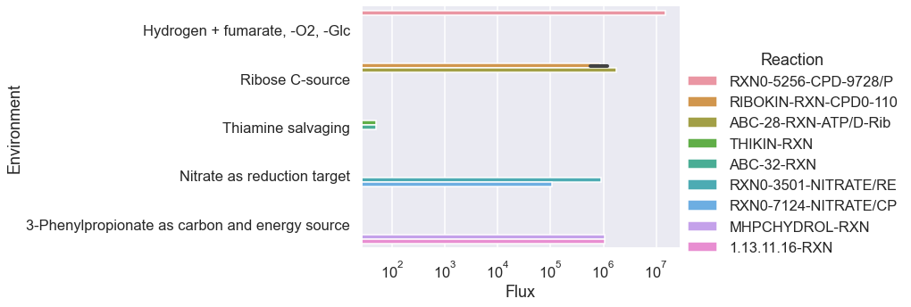

[1]:
import numpy as np
import seaborn as sns
import pandas as pd
import os
os.chdir(os.path.expanduser('~/vivarium-ecoli'))
import matplotlib.pyplot as plt
import dill
import requests
import xmltodict
from ecoli.processes.metabolism_redux import NetworkFlowModel, FlowResult
sns.set(style='darkgrid', palette='viridis', context='talk')
/Users/cyrus/.pyenv/versions/3.9.9/envs/viv/lib/python3.9/site-packages/jax/_src/lib/__init__.py:32: UserWarning: JAX on Mac ARM machines is experimental and minimally tested. Please see https://github.com/google/jax/issues/5501 in the event of problems.
warnings.warn("JAX on Mac ARM machines is experimental and minimally tested. "
Import simulation output
Before running this, run a sim in ecoli/experiments/metabolism_redux_sim.py with -n 2 to generate a simulation output. This is necessary to replicate the simulation environment. Use the default .json config.
[2]:
time = '10'
date = '2023-04-10'
experiment = 'fba-redux-standard'
entry = f'{experiment}_{time}_{date}'
folder = f'out/fbagd/{entry}/'
[3]:
output = np.load(folder + 'output.npy',allow_pickle='TRUE').item()
# output = np.load(r"out/geneRxnVerifData/output_glc.npy", allow_pickle=True, encoding='ASCII').tolist()
output = output['agents']['0']
fba = output['listeners']['fba_results']
mass = output['listeners']['mass']
bulk = pd.DataFrame(output['bulk'])
[4]:
f = open(folder + 'agent_steps.pkl', 'rb')
agent = dill.load(f)
f.close()
[5]:
stoichiometry = agent['ecoli-metabolism'].model.stoichiometry
maintenance_reaction = agent['ecoli-metabolism'].model.maintenance_reaction
stoichiometry["maintenance_reaction"] = maintenance_reaction
bad_rxns = ["RXN-12440", "TRANS-RXN-121", "TRANS-RXN-300", "TRANS-RXN-8"] # generate carbon mistake in parca, efflux/influx proton gen, iron cheating
for rxn in bad_rxns:
stoichiometry.pop(rxn, None)
Pandas automatically understands dicts of dicts as matrices.
[6]:
sim_fluxes = pd.DataFrame(fba["estimated_fluxes"])
sim_fluxes = pd.DataFrame(sim_fluxes.loc[4, :].abs().sort_values(ascending=False))
sim_fluxes.head(10)
[6]:
| 4 | |
|---|---|
| TRANS-RXN-300 | 14905204 |
| TRANS-RXN-121 | 14905204 |
| TRANS-RXN-145 | 4685215 |
| ATPSYN-RXN (reverse) | 3622805 |
| FUMHYDR-RXN__FUMARASE-A | 1131615 |
| FUMHYDR-RXN__FUMARASE-A (reverse) | 787822 |
| GAPOXNPHOSPHN-RXN | 429866 |
| PHOSGLYPHOS-RXN (reverse) | 429864 |
| 2PGADEHYDRAT-RXN | 429258 |
| 3PGAREARR-RXN (reverse) | 429210 |
Test changing nutrient composition
[7]:
uptake = (fba["unconstrained_molecules"][3]).copy()
uptake_c = fba["constrained_molecules"]
uptake.extend(list(uptake_c.keys()))
uptake = set(uptake)
# addition = set(["CPD0-1074[c]"])
addition = set([
"FRU[p]",
# "NITRATE[p]"
# 'THIAMINE[p]',
# 'HYDROGEN-MOLECULE[p]',
# 'FUM[p]'
])
removals = set([
"GLC[p]",
# # 'AMMONIUM[c]',
# # 'WATER[p]'
# # 'Pi[p]',
# # 'SULFATE[p]'
# 'OXYGEN-MOLECULE[p]'
])
uptake = uptake | addition
uptake = uptake - removals
uptake
[7]:
{'AMMONIUM[c]',
'CA+2[p]',
'CARBON-DIOXIDE[p]',
'CL-[p]',
'CO+2[p]',
'FE+2[p]',
'FRU[p]',
'K+[p]',
'L-SELENOCYSTEINE[c]',
'MG+2[p]',
'MN+2[p]',
'NA+[p]',
'NI+2[p]',
'OXYGEN-MOLECULE[p]',
'Pi[p]',
'SULFATE[p]',
'WATER[p]',
'ZN+2[p]'}
Use NetworkFlowModel class to run model
[8]:
homeostatic = pd.DataFrame(fba["target_homeostatic_dmdt"]).loc[4, :]
exchanges = pd.DataFrame(fba["estimated_exchange_dmdt"]).loc[4, :]
maintenance = pd.DataFrame(fba["target_maintenance_flux"]).at[4, 0]
kinetic = pd.DataFrame(fba["target_kinetic_fluxes"]).loc[4, :]
homeostatic
[8]:
2-3-DIHYDROXYBENZOATE[c] 73
2-KETOGLUTARATE[c] 187
2-PG[c] 49
2K-4CH3-PENTANOATE[c] 72
4-AMINO-BUTYRATE[c] 161
...
WATER[c] 22086088
XYLULOSE-5-PHOSPHATE[c] 89
ZN+2[c] 89
ZN+2[p] 53
glycogen-monomer[c] 35110
Name: 4, Length: 172, dtype: int64
[9]:
model = NetworkFlowModel(reactions=stoichiometry, homeostatic_metabolites=list(dict(homeostatic).keys()))
[10]:
model.set_up_exchanges(exchanges=list(dict(exchanges).keys()), uptakes=uptake)
[11]:
solution: FlowResult = model.solve(homeostatic_targets=dict(homeostatic),
maintenance_target=maintenance,
kinetic_targets=dict(kinetic),
binary_kinetic_targets={},
objective_weights={'secretion': 0.001, 'efficiency': 0.00001, 'kinetics': 0.000001},
upper_flux_bound=100000000)
[12]:
pd.Series(solution.exchanges).sort_values(ascending=False).head(10)
[12]:
WATER[p] 1.747716e+07
FRU[p] 1.382843e+06
AMMONIUM[c] 1.366761e+06
OXYGEN-MOLECULE[p] 1.261141e+06
Pi[p] 1.776750e+05
K+[p] 5.145700e+04
SULFATE[p] 1.428000e+04
MG+2[p] 2.287000e+03
FE+2[p] 1.930000e+03
CA+2[p] 1.425000e+03
dtype: float64
[13]:
pd.Series(solution.velocities).sort_values(ascending=False).head(10)
[13]:
TRANS-RXN-145 1.747716e+07
ATPSYN-RXN (reverse) 4.101845e+06
maintenance_reaction 3.058992e+06
GAPOXNPHOSPHN-RXN 2.252105e+06
PHOSGLYPHOS-RXN (reverse) 2.252097e+06
NADH-DEHYDROG-A-RXN-NADH/UBIQUINONE-8/PROTON//NAD/CPD-9956/PROTON.46. 2.183795e+06
3PGAREARR-RXN (reverse) 2.067018e+06
2PGADEHYDRAT-RXN 2.066969e+06
TRANS-RXN0-545[CCO-PM-BAC-NEG]-CARBON-DIOXIDE//CARBON-DIOXIDE.47. (reverse) 1.821538e+06
RXN0-6717 1.382843e+06
dtype: float64
Implement multiple environments
Set up schema for testing lots of fluxes
Connect to EcoCyc to go from Genes -> Reactions
[14]:
s = requests.Session() # create session
# Post login credentials to session:
s.post('https://websvc.biocyc.org/credentials/login/', data={'email':'cellulararchitect@protonmail.com', 'password':'Cellman0451'})
[14]:
<Response [200]>
[15]:
condition_sets = {0: {"Environment": "Hydrogen + fumarate, -O2, -Glc",
"Genes": set(["EG10468", "EG10469", "EG10470", "EG11799", "EG11800", "EG11801", "G7554"]),
"Add": set(["FUM[p]", 'HYDROGEN-MOLECULE[p]']),
"Remove": set(["GLC[p]", "OXYGEN-MOLECULE[p]"]),
},
1: {"Environment": "Ribose C-source",
"Genes": set(["EG10814", "EG10815", "EG10816", "EG10818"]),
"Add": set(["D-Ribopyranose[p]"]),
"Remove": set(["GLC[p]"]),
},
2: {"Environment": "Thiamine salvaging",
"Genes": set(["EG11574", "G6566", "M007", "EG11573", "EG11572"]),
"Add": set(["THIAMINE[p]"]),
"Remove": set(),
},
3: {"Environment": "Nitrate as reduction target",
"Genes": set(["EG10638", "EG10639", "EG10640", "EG10644", "EG10647", "EG10648"]),
"Add": set(["NITRATE[p]"]),
"Remove": set(["OXYGEN-MOLECULE[p]"]),
},
4: {"Environment": "3-Phenylpropionate as carbon and energy source",
"Genes": set(["M010", "M011", "M012", "G6206"]),
"Add": set(["3-PHENYLPROPIONATE[p]"]),
"Remove": set(["GLC[p]"]),
},
# 5: {"Genes": set(["EG10286", "EG10287", "EG10288", "EG10289",
# "EG10290", "EG10293", "EG10294", "EG10295",
# "EG10296", "EG10298", "EG10302", "EG10303",
# "EG10304", "EG10305", "EG10306", "G6414"]),
# "Add": set(),
# "Remove": set(),
# "Environment": "Proper metal (iron) uptake"}
}
condition_df = pd.DataFrame(condition_sets).T
condition_df["Reactions"] = [[np.nan]] * len(condition_df)
condition_df
[15]:
| Environment | Genes | Add | Remove | Reactions | |
|---|---|---|---|---|---|
| 0 | Hydrogen + fumarate, -O2, -Glc | {EG10469, EG10468, EG11799, EG10470, G7554, EG... | {FUM[p], HYDROGEN-MOLECULE[p]} | {OXYGEN-MOLECULE[p], GLC[p]} | [nan] |
| 1 | Ribose C-source | {EG10814, EG10818, EG10816, EG10815} | {D-Ribopyranose[p]} | {GLC[p]} | [nan] |
| 2 | Thiamine salvaging | {M007, EG11572, EG11573, G6566, EG11574} | {THIAMINE[p]} | {} | [nan] |
| 3 | Nitrate as reduction target | {EG10644, EG10638, EG10639, EG10640, EG10647, ... | {NITRATE[p]} | {OXYGEN-MOLECULE[p]} | [nan] |
| 4 | 3-Phenylpropionate as carbon and energy source | {M011, M010, G6206, M012} | {3-PHENYLPROPIONATE[p]} | {GLC[p]} | [nan] |
[16]:
for i in range(len(condition_df.index)):
genes = condition_df.loc[i, "Genes"]
rxn_set = set()
for gene in genes:
function = "reactions-of-gene"
name = gene
req_str = f"https://websvc.biocyc.org/apixml?fn={function}&id=ECOLI:{name}&detail=none&fmt=json"
r = s.get(req_str)
o = xmltodict.parse(r.content)['ptools-xml']['Reaction']
if type(o) is dict:
o = [o]
for rxn in o:
if type(rxn) is not str: # no rxns
rxn_set.add(rxn['@frameid'])
else:
print(gene, rxn)
condition_df.at[i, "Reactions"] = rxn_set
[17]:
condition_df
[17]:
| Environment | Genes | Add | Remove | Reactions | |
|---|---|---|---|---|---|
| 0 | Hydrogen + fumarate, -O2, -Glc | {EG10469, EG10468, EG11799, EG10470, G7554, EG... | {FUM[p], HYDROGEN-MOLECULE[p]} | {OXYGEN-MOLECULE[p], GLC[p]} | {RXN-16420, RXN0-5256, RXN0-7399} |
| 1 | Ribose C-source | {EG10814, EG10818, EG10816, EG10815} | {D-Ribopyranose[p]} | {GLC[p]} | {RIBOKIN-RXN, ABC-28-RXN} |
| 2 | Thiamine salvaging | {M007, EG11572, EG11573, G6566, EG11574} | {THIAMINE[p]} | {} | {THIAZOLSYN3-RXN, RXN0-7298, THIKIN-RXN, ABC-3... |
| 3 | Nitrate as reduction target | {EG10644, EG10638, EG10639, EG10640, EG10647, ... | {NITRATE[p]} | {OXYGEN-MOLECULE[p]} | {RXN0-3501, RXN0-7124, RXN-15119} |
| 4 | 3-Phenylpropionate as carbon and energy source | {M011, M010, G6206, M012} | {3-PHENYLPROPIONATE[p]} | {GLC[p]} | {RXN-10040, TRANS-RXN0-457, TRANS-RXN-61, MHPC... |
Quick and dirty loop (after init)
[18]:
results_df = pd.DataFrame(columns=["Environment", "Reaction", "Flux"])
for i in range(len(condition_df)):
condition_idx = i
uptake = (fba["unconstrained_molecules"][3]).copy()
uptake_c = fba["constrained_molecules"]
uptake.extend(list(uptake_c.keys()))
uptake = set(uptake)
addition = condition_df.at[condition_idx, "Add"]
removals = condition_df.at[condition_idx, "Remove"]
uptake = uptake | addition
uptake = uptake - removals
model.set_up_exchanges(exchanges=list(dict(exchanges).keys()), uptakes=uptake)
solution: FlowResult = model.solve(homeostatic_targets=dict(homeostatic),
maintenance_target=maintenance,
kinetic_targets=dict(kinetic),
binary_kinetic_targets={},
objective_weights={'secretion': 0.001, 'efficiency': 0.00001, 'kinetics': 0.000001},
upper_flux_bound=100000000)
# Check flux
fluxes = pd.DataFrame({model.rxns[i]: [solution.velocities[model.rxns[i]], stoichiometry[model.rxns[i]]] for i in range(len(model.rxns))}).T
fluxes.columns = ["Flux", "Stoichiometry"]
relevant_rxns = condition_df.at[condition_idx, "Reactions"]
relevant_rxn_idx = []
for rxn in relevant_rxns:
relevant_rxn_idx.extend(list(np.where(fluxes.index.str.contains(rxn))[0] ))
relevant_fluxes = fluxes.iloc[relevant_rxn_idx, :]
relevant_nonzero_fluxes = relevant_fluxes[relevant_fluxes["Flux"] != 0].loc[:, "Flux"]
for j, k in enumerate(relevant_nonzero_fluxes.index):
results_df = results_df.append(pd.DataFrame([[condition_df.at[condition_idx, "Environment"],
relevant_nonzero_fluxes.index[j],
relevant_nonzero_fluxes[k]]], columns=["Environment", "Reaction", "Flux"]))
#print(condition_df.at[condition_idx, "Environment"],"\n" ,relevant_fluxes[relevant_fluxes["Flux"] != 0].loc[:, "Flux"], "\n")
[19]:
results_df["Reaction"] = results_df['Reaction'].str.slice(0,20)
results_df
[19]:
| Environment | Reaction | Flux | |
|---|---|---|---|
| 0 | Hydrogen + fumarate, -O2, -Glc | RXN0-5256-CPD-9728/P | 1.502564e+07 |
| 0 | Ribose C-source | RIBOKIN-RXN-CPD0-110 | 1.186894e+06 |
| 0 | Ribose C-source | RIBOKIN-RXN-CPD0-110 | 5.673886e+05 |
| 0 | Ribose C-source | ABC-28-RXN-ATP/D-Rib | 1.754283e+06 |
| 0 | Thiamine salvaging | THIKIN-RXN | 4.900000e+01 |
| 0 | Thiamine salvaging | ABC-32-RXN | 4.900000e+01 |
| 0 | Nitrate as reduction target | RXN0-3501-NITRATE/RE | 8.898633e+05 |
| 0 | Nitrate as reduction target | RXN0-7124-NITRATE/CP | 1.048420e+05 |
| 0 | 3-Phenylpropionate as carbon and energy source | MHPCHYDROL-RXN | 1.063458e+06 |
| 0 | 3-Phenylpropionate as carbon and energy source | 1.13.11.16-RXN | 1.063458e+06 |
[20]:
sns.catplot(y="Environment",hue="Reaction", x="Flux", data=results_df, kind="bar", aspect=2.5)
plt.xscale('log')
#plt.tight_layout()
plt.savefig("notebooks/fbagd/figures/rxns_light_up.png", dpi=300)

Extract specific fluxes for balancing
[21]:
rxns_names = ['PGLUCISOM-RXN', '6PFRUCTPHOS-RXN', 'F16ALDOLASE-RXN', 'TRIOSEPISOMERIZATION-RXN',
'GAPOXNPHOSPHN-RXN', 'PHOSGLYPHOS-RXN', '3PGAREARR-RXN',
'2PGADEHYDRAT-RXN', 'PEPDEPHOS-RXN']
[22]:
fluxes.sort_values(by=0, axis=1, ascending=False).T.head(10)
---------------------------------------------------------------------------
KeyError Traceback (most recent call last)
/var/folders/dx/0239zgvj0tgf46b5h8l7v_fc0000gn/T/ipykernel_50588/507094919.py in <module>
----> 1 fluxes.sort_values(by=0, axis=1, ascending=False).T.head(10)
~/.pyenv/versions/3.9.9/envs/viv/lib/python3.9/site-packages/pandas/util/_decorators.py in wrapper(*args, **kwargs)
309 stacklevel=stacklevel,
310 )
--> 311 return func(*args, **kwargs)
312
313 return wrapper
~/.pyenv/versions/3.9.9/envs/viv/lib/python3.9/site-packages/pandas/core/frame.py in sort_values(self, by, axis, ascending, inplace, kind, na_position, ignore_index, key)
6257
6258 by = by[0]
-> 6259 k = self._get_label_or_level_values(by, axis=axis)
6260
6261 # need to rewrap column in Series to apply key function
~/.pyenv/versions/3.9.9/envs/viv/lib/python3.9/site-packages/pandas/core/generic.py in _get_label_or_level_values(self, key, axis)
1777 values = self.axes[axis].get_level_values(key)._values
1778 else:
-> 1779 raise KeyError(key)
1780
1781 # Check for duplicates
KeyError: 0
[ ]:
fluxes_small = fluxes.loc[fluxes.index.isin(rxns_names), :]
fluxes_small
[ ]:
fluxes.loc[fluxes.index.str.contains("TRIOSEPISOMERIZATION-RXN"),:]
[ ]:
fluxes.loc[fluxes.index.str.contains("3PGAREARR-RXN"),:]
[ ]:
fluxes.loc[fluxes.index.str.contains("PHOSGLYPHOS-RXN"),:]
[ ]:
fluxes.loc[fluxes.index.str.contains("2TRANSKETO-RXN"),:]
[ ]:
glucose_transport_reactions = ['TRANS-RXN-157-PTSH-PHOSPHORYLATED/GLC//ALPHA-GLC-6-P/PTSH-MONOMER.52.',
'TRANS-RXN-157-PTSH-PHOSPHORYLATED/GLC//D-glucopyranose-6-phosphate/PTSH-MONOMER.66.',
'TRANS-RXN-157-PTSH-PHOSPHORYLATED/GLC//GLC-6-P/PTSH-MONOMER.46.',
'RXN0-7077-GLC/PROTON//ALPHA-GLUCOSE/PROTON.33.',
'RXN0-7077-GLC/PROTON//Glucopyranose/PROTON.33.',
'RXN0-7077-GLC/PROTON//GLC/PROTON.23.',
'TRANS-RXN0-574-GLC//GLC.9.',
'TRANS-RXN0-574-GLC//Glucopyranose.19.',
'TRANS-RXN-320-GLC/ATP/WATER//ALPHA-GLUCOSE/ADP/Pi/PROTON.43.',
'TRANS-RXN-320-GLC/ATP/WATER//GLC/ADP/Pi/PROTON.33.',
'TRANS-RXN-320-GLC/ATP/WATER//Glucopyranose/ADP/Pi/PROTON.43.']